Armas mágicas são armas usadas em combate de médio a longo alcance. A característica que define as armas mágicas é o consumo de mana em todos os usos. Devido a suas formas incomuns e únicas de ataque, a maioria das armas mágicas dificilmente pode ser categorizada em diferentes tipos: Cajados, Armas Mágicas e Feitiços
A classe Mage também é caracterizada pelo alto Dano por Segundo (DPS).
No início do jogo as há poucas opçoes para magos.
O feitiço Demon Scythe e a Gypsy Robe possuem os melhores status disponíveis nesta fase do jogo:
 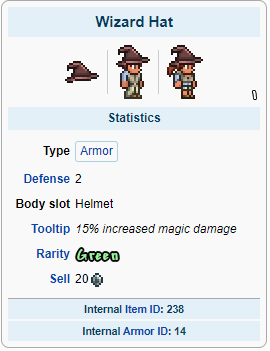
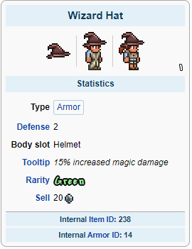Para acessórios é recomendado usar: Celestial Magnet, Shark Tooth Necklace, Mana Flower, Frostspark Boots e Band of Starpower
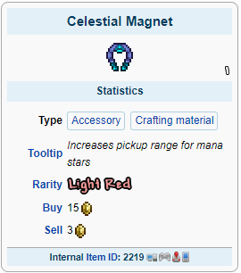 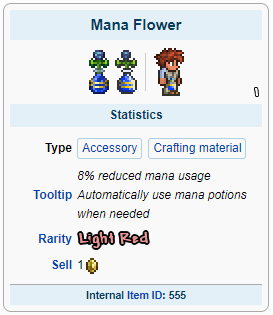
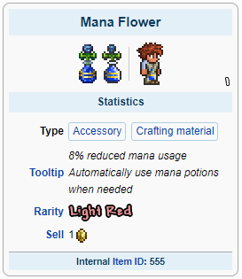
 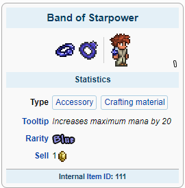
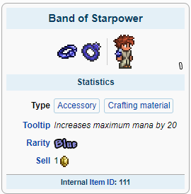
Com esses equipamentos você estará pronto para derrotar qualquer chefe Pré-Hardmode!
A preparação para a luta com o Wall of Flesh utilize armas com bom alcance
A Flower of Fire e o Flamelash serão suas melhores escolhas:
Para acessórios a única alteração é a troca da Band of Starpower pelo Obsidian Shield:

Agora você está pronto para derrotar chefe do submundo e libertar poderes antigos em seu mundo!
Após derrotar o Wall of Flesh magias poderosas serão libertadas em seu mundo, novos biomas, inimigos, chefes e esquipamentos estarão disponíveis para uso.
Com tudo liberado a armadura Nebula, Last Prism e Lunar Flare serão seus equipamentos:
 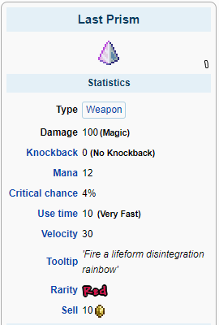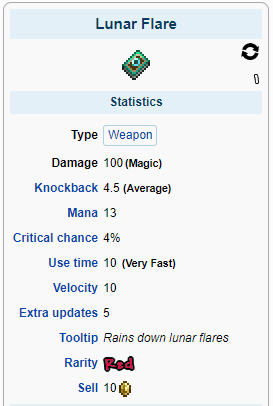
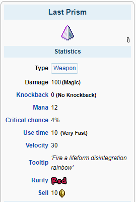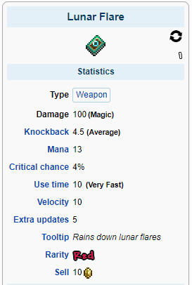No Hardmode vários acessórios poderosos estarão disponíveis, entre eles:
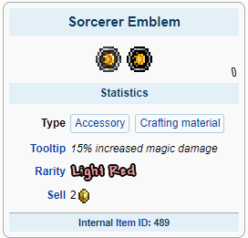 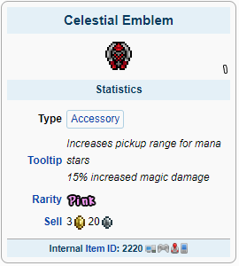


Agora você está pronto para derrotar qualquer coisa que entrar em seu caminho!
Melee RangerSummoner